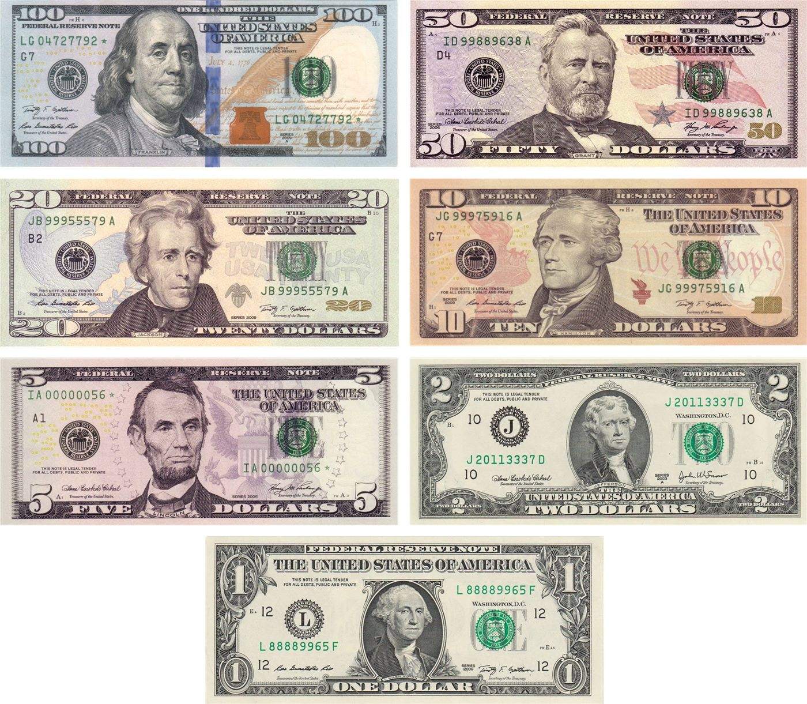
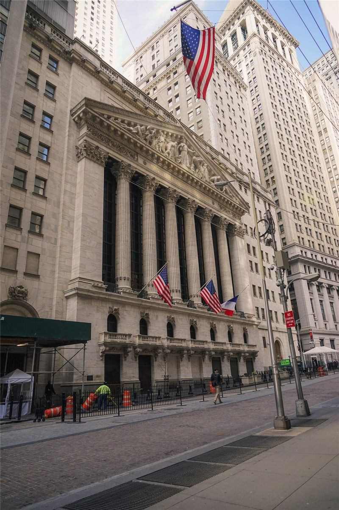
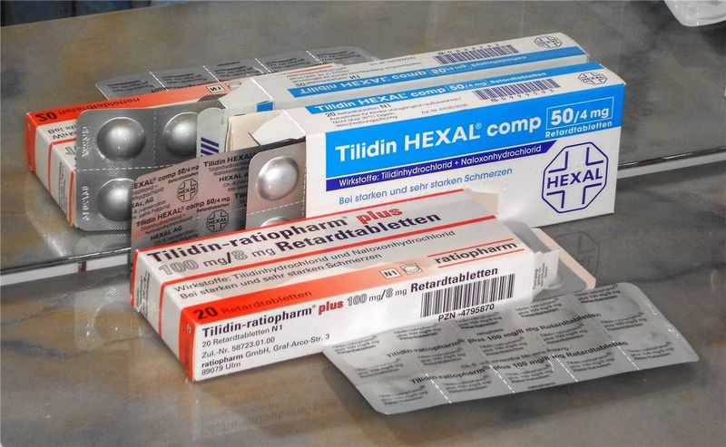
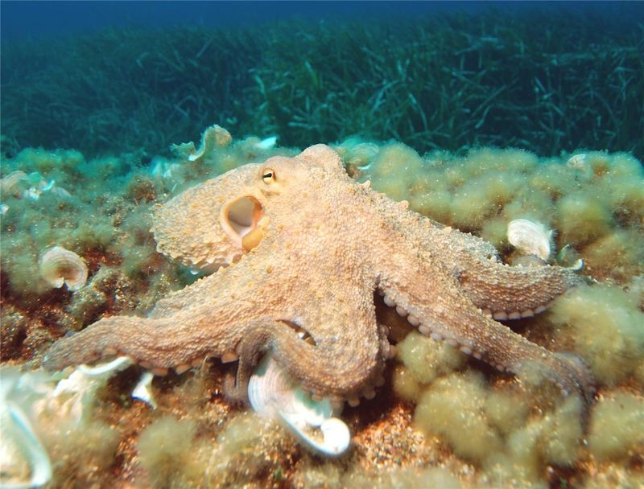

橋경제
경제원화 가치 17년 만에 최저… 1,540원 돌파, 재한 화인 가계가 흔들린다
원·달러 환율이 2009년 이후 최고로 치솟았다. 외국인 자금 이탈이 방아쇠를 당겼고, 본국에 돈을 보내는 화인 가정과 유학생이 가장 먼저 타격을 받는다. 정부는 '즉각 대응'을 예고했다.
원·달러 환율이 2009년 이후 최고로 치솟았다. 외국인 자금 이탈이 방아쇠를 당겼고, 본국에 돈을 보내는 화인 가정과 유학생이 가장 먼저 타격을 받는다. 정부는 '즉각 대응'을 예고했다.

달러뿐 아니라 유로 대비 원화도 약세. 유럽발 수입품과 여행 비용이 오른다.

대규모 자금 유출이 환율과 주가를 함께 끌어내렸다.

6월 11일 멕시코시티 개막, 7월 19일까지. 폭염 대비 규정 신설.

안전성·내약성 확인. 문어의 거울 사용도 관찰.

무척추동물의 거울 이용이 관찰돼 인지과학에 새로운 질문을 던졌다.

민간 우주기업 스페이스X의 기업가치가 아마존을 제치고 세계 시가총액 5위 수준으로 올라섰다. 재사용 로켓과 위성통신 사업의 성장이 평가를 끌어올렸다.

이탈리아 명문 AC밀란이 후벵 아모림 감독을 새 사령탑으로 선임했다. 아모림 감독은 "밀란은 내가 꿈꿔온 클럽"이라며 새로운 도전 의지를 밝혔다.

혼다의 대표 세단 어코드가 출시 50주년을 맞았다. 누적 판매 대수가 1500만대에 육박하며, 과거 미국산 차량의 대만 수출 기록도 남겼다.
픽사 '토이 스토리5'가 디지털 기기에 빠진 아이들과 장난감의 갈등을 그린다. 태블릿에 밀려난 장난감들의 이야기가 시대상을 반영한다.
방탄소년단(BTS) 관련 행사가 부산에 가져온 경제 효과가 주목받고 있다. 팬 유입과 소비가 지역 상권과 관광에 활기를 불어넣었다.
인공지능(AI)이 단순한 도구를 넘어 '동료'처럼 업무에 참여하는 단계로 진화하고 있다. 생산성 향상과 일자리 변화라는 양면이 함께 논의된다.